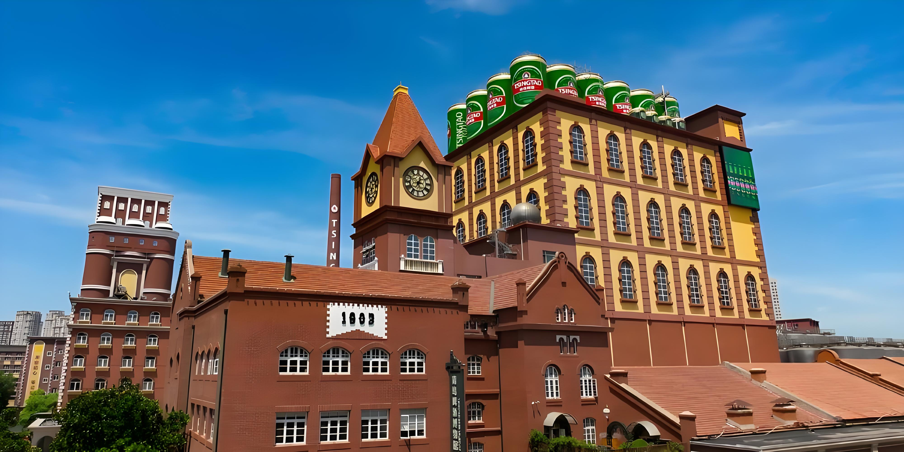

Founded in 1903 by German merchants, Tsingtao Brewery is one of China's oldest and most famous beer producers. The brewery was established during the German colonial period and has been producing its signature beer using German brewing techniques for over 120 years.
Tsingtao beer is made with high-quality barley and hops imported from Germany, combined with pure water from the Laoshan springs. This unique recipe creates a crisp, refreshing lager that has become China's most recognized beer brand worldwide.
Visitors can tour the original brewery buildings, which have been preserved as a museum. The tour includes the historic brewing halls, vintage equipment, and of course, a tasting session of fresh Tsingtao beer right from the source. It is a must-visit for beer enthusiasts and history lovers alike.
← Back to Home